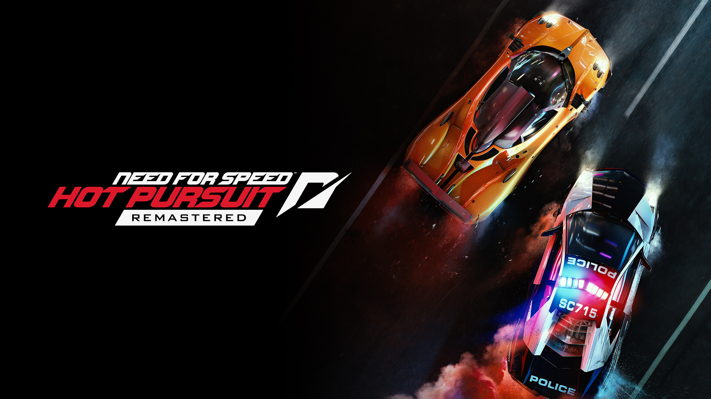
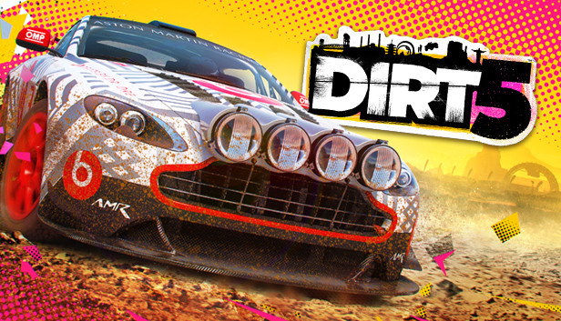
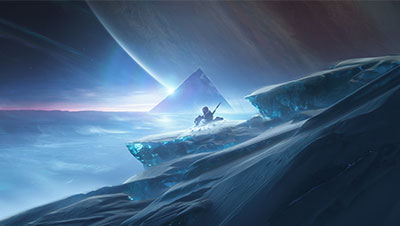
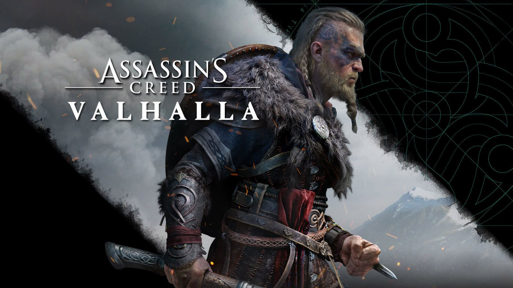
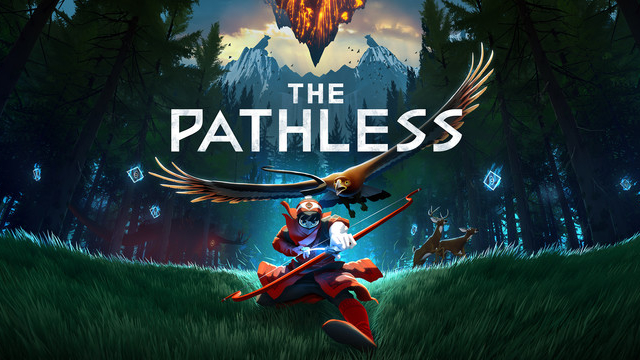
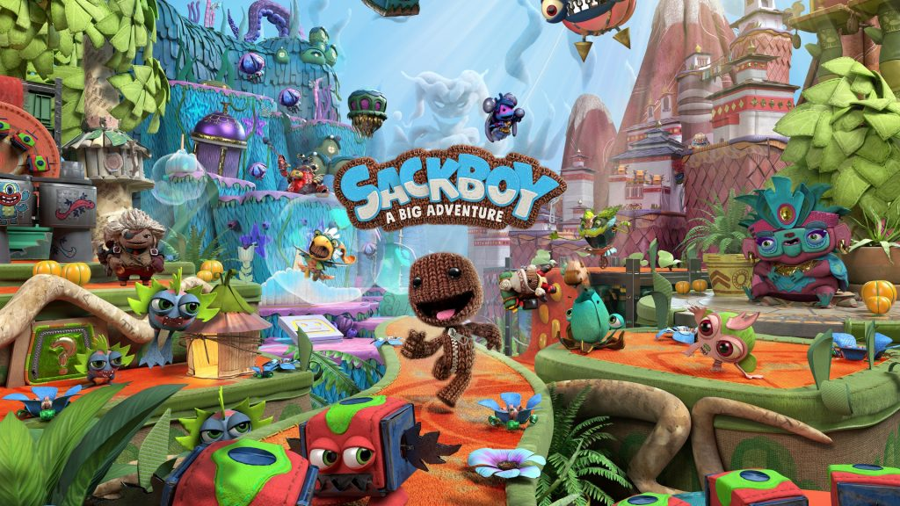
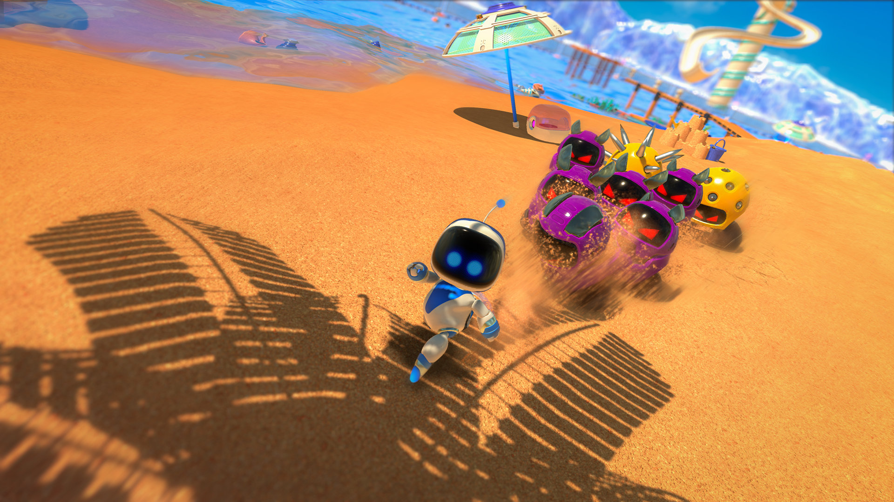
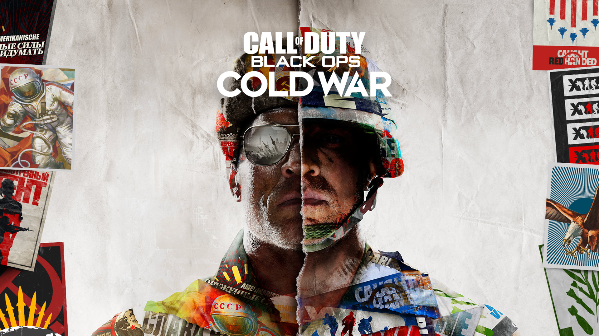

Saiba os lançamentos de novembro de 2020 no mundo dos games
Confira agora os principais lançamentos de novembro no mundo dos games com a chegada dos novos consoles.
Need for Speed: Hot Pursuit Remastered - 06/11 & 13/11 para Switch
Um dos melhores need for speed da era moderna chega em sua versão remasterizada com corridas e perseguições extremas.
Infelizmente o jogo será vendido a preço cheio com justificativa das mudanças visuais.
Need for Speed Hot Pursuit chega para PS4, Xbox One e PC no dia 6 de novembro e Nintendo Switch no dia 13 de novembro.
DiRT 5 - 06/11
Para os fãs de simulador de corrida offroad, DiRT 5 chega derrapando na terra e sujeira. Feito por uma especialista em jogos de corrida, o novo game da codemasters promete trazer aos fãs os melhores sentimentos de controle possíveis.
DiRT 5 chega para PC, PS4, Xbox One e para Stadia em 2021, além de ser um dos títulos de lançamento do PS5 e Xbox Series X/S.
Yakuza 7: Like a Dragon - 10/11
Uma das melhores séries de Beat’n Up 3D chega com seu mais novo jogo Yakuza Like a Dragon nesse mês de novembro com algumas novidades interessantes, entre elas alguns elementos de J-RPG inclusive no meio do combate.
Yakuza 7: Like a Dragon chega para PC, PS4, Xbox One, Xbox Series X/S e com sua versão programada também para PS5 em março de 2021.
Destiny 2: Beyond Light - 10/11
Embora não seja um jogo a nova expansão de Destiny 2 promete ser grandiosa trazendo diversas novas aventuras para os jogadores com o melhor elemento do jogo que é poder fazer tudo isso junto dos amigos.
Beyond Light é a quinta expansão do game que traz uma nova aventura em uma lua de Júpiter chamada Europa, novos inimigos e eventos.
Assassin’s Creed: Valhalla - 10/11
Um dos jogos mais aguardados do ano chega esse mês sendo um dos grandes destaques do mês. Assassin’s Creed Valhalla mostra mais uma parte da história antiga dos assassinos da saga, dessa vez se focando em povos nórdicos.
Assassin’s Creed Valhalla chega para PC, PS4, Xbox One, Xbox Series X/S.
The Pathless - 12/11
No dia 12 de novembro chega um dos games mais curiosos da nova e atual geração. The Pathless da Giant Squid, dos mesmos criadores de ABZÛ o game traz um personagem que parte para uma aventura com seu arco juntamente de sua águia amiga e indiscutivelmente tem uma arte incrível, certamente vale a pena para aqueles que buscam altas aventuras e relaxar enquanto joga.
The Pathless chega para PC, PS4 e PS5.
Sackboy: A Big Adventure - 12/11
Para o dia oficial de lançamento do PS5 chega o jogo do mascote da Sony juntamente com outro game para os jogadores testarem o dualsense. Sackboy A Big Adventure promete ter diversos puzzles divertidos para fazer com os amigos e também é um dos jogos produzidos para testar tudo do Playstation 5 e com certeza vai divertir as crianças pequenas (e as crianças grandes também).
Sackboy: A Big Adventure chega para PS4 e PS5.
Astro’s Playroom - 12/11
O mascote oficial da Playstation chega para testar todas as capacidades do console e o dualsense, prometendo diversas aventuras com a melhor experiência Playstation possível. Apesar de ser um jogo feito para demonstrar os conteúdos do console para os novatos Astro’s Playroom não se trata apenas de um game simples e sim algo divertido e inovador.
Astro’s Playroom já vem instalado no PS5 assim sendo o primeiro jogo para todos testarem o console.
Godfall - 12/11

Prometendo ser o primeiro Looter-slasher do mercado, Godfall chega junto com o PS5 para ser jogador com os amigos durante muito tempo como a maioria dos lootershooters, o jogo irá misturar troca de espadas, armaduras e outros equipamentos fazendo assim com que cada jogadores tenha loots e armas totalmente diferentes de outros jogadores. Se você procura algo para jogar com os amigos esse é um ótimo desafio e uma ótima pedida, pois o combate mescla o estilo souls like com o clássico hack’n slash.
Godfall chega para PC e PS5.
Call of Duty: Black Ops Cold War - 13/11
Dispensando comentários o novo jogo da franquia Call of Duty que bate recorde de vendas todos os anos chega com um história se passando durante a guerra fria. Como o jogo faz parte da saga Black Ops podemos esperar conteúdos sobre os Mason e Woods que são personagens marcantes da franquia Call of Duty.
Call of Duty: Black Ops Cold War chega para PC, PS4 e Xbox One.
Demon’s Souls - 19/11

O remake do primeiro jogo da consagrada saga Souls chega exclusivamente para PS5 aproveitando todo o desempenho do console para levar uma experiência digna de nova geração. Demon’s Souls que foi lançado na geração de PS3 e nunca teve versão para PS4 agora terá opção de ser jogado a 60 fps, algo imprescindível para um game com a jogabilidade clássica da saga.
Demon’s Souls chega exclusivamente para PS5.
Spider-Man: Miles Morales - 19/11

Um dos jogos mais esperados do ano chega também esse mês. Miles Morales chega para expandir o universo de Spider-Man de 2018 sendo agora o protagonista de sua própria história com apoio do Homem-Aranha Peter Parker. Miles possui poderes diferenciados como eletricidade e promete ser um Spider-Man grandioso assim como sua parte dos quadrinhos. Certamente os fãs que assistiram Homem-Aranha no aranhaverso estão empolgados com esse novo jogo. Além disso o jogo ainda vem com uma versão remasterizada do jogo original com algumas melhorias de gráficos e jogabilidade.
Spider-Man: Miles Morales chega para PS4 e PS5.
Todas as imagens utilizadas possuem direitos autorais das empresas citadas e não devem ser utilizadas ou reproduzidas por terceiros.